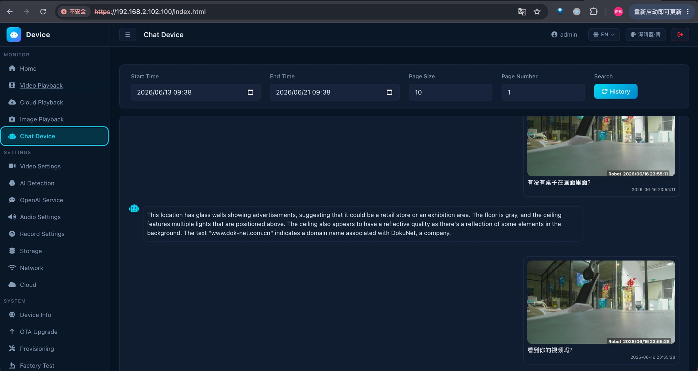
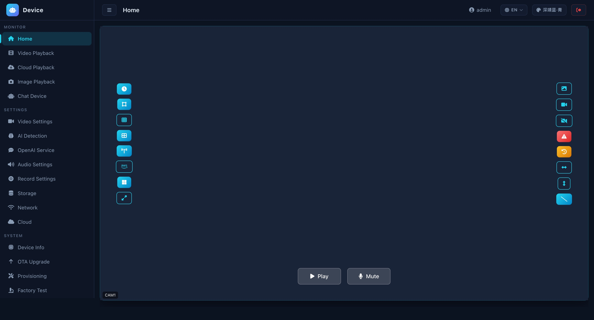

一整套 AI 视觉,
做进你的产品里。
让你的摄像头 / 机器人 / 记录仪自己看得懂、认得出、还能回答;不连网也能用、数据不外泄。从设备里的软件、AI,到云端后台、手机 App,一整套做好、整套贴你的牌子。你有市场和渠道,难做的 AI 我全包。
17 years in security cameras. On-device YOLO + Vision-LLM that still works with the internet unplugged. Full edge-cloud-app stack, white-labeled to your brand. You own the market — I bring the on-device AI others can't ship.
从硬件到手机 App,整套都做好给你
不是卖你一个零件——设备里的软件、AI,到云端后台、手机 App,一整条都做好;每块能单独给,也能整套贴你的牌子。
设备里的软件
把设备从底层跑起来:画面、录像、存储全调好。
- 6 种主流芯片,一套代码通用
- 1080P 高清,主流编码
- 自动自愈 · 断电保护
设备自带的 AI
AI 全在设备里算,不依赖云。
- 认人认物,当场框在画面上
- 看懂现场、读出画面里的字、能问答
- 可直接接进机器人系统
云端后台(亚马逊云)
设备联网管理、录像上云、远程维护全托管。
- 设备联网、账号、录像存储全托管
- 重要录像上云,随时能翻能搜
- 远程升级 · 安全不开端口
手机 App 和电脑后台
把设备能力交到用户手机和电脑上。
- 手机看直播、回放、设置
- 电脑后台,多语言、可贴牌
- 远程看画面不卡
难的不是写代码,是把 AI 塞进便宜设备还跑得稳
把这么重的 AI 装进量产的便宜设备里、还得长期稳定不出事——这正是我做了 17 年的地方。
拔了网线,它还在认人断网也能用
认人、看懂现场都在设备本地完成,不上云、不外泄、断网照用。这种隐私和离线,云端服务给不了。
不只是认出来,还能"看懂"会读字、能问答
不光框出人和物,还能读出画面里的招牌、铭牌、车牌字,你能直接问它现场情况。比"数人头"高一个档次。
换芯片不用重做6 种芯片一套通用
6 种主流芯片一套代码通用,缺货换料也不卡出货——17 年踩过的坑,变成你量产的确定性。
长期稳定,录像不丢工业级可靠
设备会自愈、断电有保护;累计 14.7 万段录像一条没丢。工业、机器人现场要的就是这个。
同样叫"AI 摄像头",差距在这一栏
市面上多数是"接个云端服务"或"外包凑功能";这套是把 AI 真正做进设备本身,还能整套交到你品牌名下。
- AI 跑在云端,断网就瘫、有延迟、数据要出门
- 只会"数个数",看不懂现场、读不了字
- 换芯片要重做,出货卡脖子
- 一锤子买断或按工时,后面没得赚
- 挂别人牌子,核心不在你手里
- AI 在设备本地跑,拔网照跑、不上云、不外泄
- 能看懂现场 + 读出画面里的字
- 6 种芯片一套通用,换芯片不重做
- 按台授权,出多少台分多少,长期有得赚
- 设备/App/后台/云整套贴成你的品牌
从看直播、认目标到回放、升级,一套全包
下面每一项都是真机已经在用的功能,手机和电脑后台都有。

随时看直播Live
手机同屏看多个画面,远程也不卡,能截图、录像、喊话。

会认人认物本地 AI
画面里有人有车有物,当场框出来,还能接进机器人系统。

会看懂会读字AI 对话
对着画面直接问:看懂现场、读出画面里的字,本地/云端两种都行。

回放随便倒Playback
本地/云端回放,多路同屏共用一条时间轴,一天的录像一目了然。

怎么录都行Recording
循环、缩时、预录、手动加事件录像;存本地、存云端都行,长期不丢。

远程升级不召回全球可用
出货后统一远程升级;美洲/亚洲/欧洲三区就近连。
同一套端侧 AI 视觉,落进你的行业
不是四套不同的东西——同一套能力,针对四类场景各自落地;而且四个场景都有真实客户在用(记录仪 / 机器人 / 摄像头 / 眼镜 四领域量产客户)。
智能安防解决方案Smart Security · 周界 / 园区 / 商铺 / 出入口
智能机器人解决方案Smart Robotics · 巡检 / 配送 / 服务机器人
行车记录仪 / 智能交通解决方案Smart Dashcam · 商用车 / 车队 / 记录仪
智能眼镜 / 可穿戴解决方案Smart Glasses · 可穿戴 / 第一视角
设备自己"看懂"了画面,还读出了画面里的字
这不是查数据库,是设备里的 AI 真的看懂了现场——下面是真实问答和真机画面。
拿实时画面,直接问它
同一画面,断网时用设备本地 AI,联网时可接云端大模型——按你的成本和合规自己选。不只是检测,设备能看懂现场、读懂画面里的字。

设备、App、云门户——整套换成你的品牌
- 设备软件:6 种芯片一套,按你的硬件出货
- 手机 App:品牌名、图标、主题色、多语言全可换
- 电脑后台:换品牌色、切中英文
- 云端后台(亚马逊云):全球三区域,数据按区合规落地
- 远程升级:出货后统一维护,不用召回
- 交付即是你的产品线,不是"某供应商的方案"

合作方式灵活 —— 按你的方式来
不绑死一种模式,看你的项目阶段和需求,选最省心的一种。
合作开发
按你的产品定义,把难能力做进你的设备里,分阶段交付、按节点结算。
模块授权
把成熟能力做成模块 / SDK 直接集成进你的产品,省去从零自研。
代码买断
需要完全自主的,也可一次性买断对应模块代码,干净利落。
这份总览之外,还有成套可发资料
同一套真机素材、统一视觉,按场景挑着发。
产品单页(钩子)
一页讲清卖点,适合首次触达陌生客户。
实战案例
记录仪/机器人/摄像头/眼镜 四真实客户,真机跑通。
Web 控制台说明书
22 页逐页讲解,可打印 PDF 交付。
App 功能说明书
手机端 10 页功能详解,真机高清截图。
Web 总览视频
约 38 秒,控制台功能巡览。
App 总览视频
约 33 秒,含真 AI 检测录屏 + AI 对话。
本页 · 解决方案总览
统领页:架构 + 证据 + 商业模式一份。
你有市场和渠道,难做的 AI 全栈交给我。
先说清你卡在哪——识别不准/误报多、便宜设备跑不动、特殊场景没算法、想在设备里上 AI 大模型。看清难点,合作开发、模块授权还是买断都好谈,把它做进你的产品里。